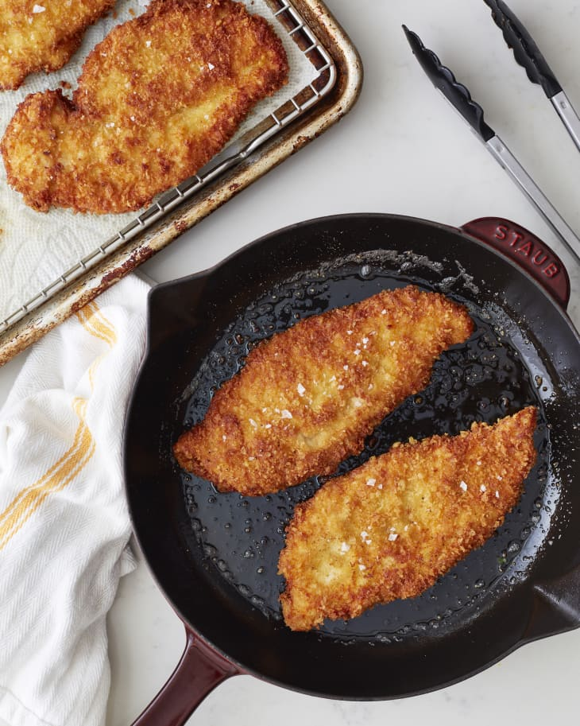

Begin by cutting your chicken breasts down the middle height.
Taking your halved chicken breasts, place them in either a cut
Zip-loc bag or some plastic wrap. Then, pound them out until they're
about 1/2 to 3/4 inch thick.
Salt and pepper your cutlets.
Prepare your breadcrumb mixture, using equal parts Panko and
regular breadcrumbs. Add the zest of your lemon and your freshly
grated parmesan. Mix well.
Set out three containers for the breading process. Begin with your
flour, then the eggs, then your breadcrumb mixture.
Place one chicken cutlet in the flour, coating thoroughly, then Place
it into your egg, coating thoroughly, and finally your breadcrumb mix,
coating thoroughly. Repeat for each chicken cutlet.
Heat your oil on the stove, checking it's the right temperature using
some of your leftover breadcrumb mixture. Add your chicken cutlets to
the oil, taking care not to overcrowd them. This may take more than one
set. Bring your oil back up to temp in between cutlets.
Serve with lemon wedges.

Parmesan chicken cutlets, image from
The Kitchn,
recipe my own.